For our demo, we are going to design and create a “proof of concept” (POC) software system for a fictitious company named "EmpowHR" (meaning "empower Employee HR").
Here is a list of icons that we will use:
 Whiteboard: capture ideas.
Whiteboard: capture ideas.
 BizRule: mark business requirements (rules) for the application that we are building.
BizRule: mark business requirements (rules) for the application that we are building.
 Review: used to recap what we just did before moving forward.
Review: used to recap what we just did before moving forward.
 CheckPoint: allow you to get caught up with the latest Model changes and sample data from a github project.
CheckPoint: allow you to get caught up with the latest Model changes and sample data from a github project.
 ReGen & Run: use OABuilder code generator to regenerate the application, and then run.
ReGen & Run: use OABuilder code generator to regenerate the application, and then run.
 Discuss & Learn: take time to explain some important concepts and technical details about how the system works.
Discuss & Learn: take time to explain some important concepts and technical details about how the system works.
 Continue working on the Model: after a discussion.
Continue working on the Model: after a discussion.
 To do item.
To do item.
 to do item: Show the screen shots of final App here.
to do item: Show the screen shots of final App here.
Along the way, we will give extra details on how to use OABuilder, generate the code, and run the application.
This POC will allow the employees of our customers to earn points. The points are then used to purchase items from a list of choices specific to the type of award and the company offering the reward.
The customers are companies that have hired EmpowHR to manage their employee award campaigns.
The name of our platform will be "empowhr", and will need to be highly configurable, so that the customers are able to create a dynamic experience and tune it to match their company preferences.
Our goal is to be able to build a single platform, that can run as a distributed platform. This means that we want our software to be able to scale and run hundreds of company campaigns, with over a million users, and expect an average of 500 users at a time, with spikes over 5k users.
For our Proof of Concepts, we will deliver:
The production platform would look something like this. Locally, we will be able run as a single user instance, or as distributed as we want - clients/server, microservices, etc.

The code generator that we are using in OABuilder has a starter Model that we can use, "OATemplate". It has model classes for User and UI settings that we can use as our starting point.
Qqqqqqqqqq show opening new model “OATemple” … make sure that it’s in correct directory, and that it gets updated when changed
We will open it and make a copy using menu option "File/Save Model As ...", naming it “EmpowHR”.

Next, use the Model Editor to configure this new project.

Next create the directory name that was entered for "Code Gen Root Dir" above.
The project is now ready to be generated. This will allow us to run and see the application as we move through the demo. Click on menu item "Generators/Generate All" and select Ok. This will generate the project in the directory that you entered above.

Create a new project in your Java IDE. Here, I am using Eclipse:
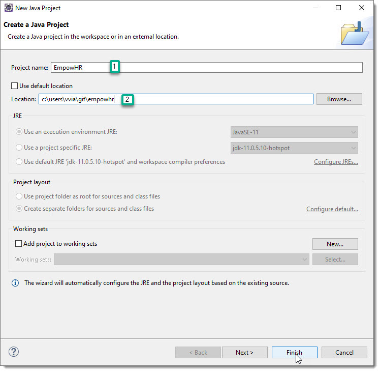
Make sure to change Location to the directory that you entered for the Models code generator directory above.
Your project will look like this in the Eclipse project explorer.

Set up the project to use Maven for building. Do this by right clicking on the project name, as follows ...

We are now ready to run. We have the option to run as single user, and as multi-user (client, client UI, server, webserver, and more).
The runtime directory in the project has subdirectories for each runtype to use as the "working directory".
Running as a single user, do the following from Eclipse to set up to run as Single User mode:
From Eclipse main menu, choose "Run/Run Configurations" and choose option to create a new launch configuration
Enter the following:


This is now ready to run.
Running the new App looks like this.

Click on toolbar button “Application”.

Click on menu item “Help”.

This is starting point, that will expand as we add and change the model.
Quick note: this same application can be ran as multiuser and split into multiple services at any time. For now, we will use the single user runtime option.
The runtime directory looks like this.

Runtime directory:
The file single.ini is used for runtime config settings for single user runtime mode. It has default settings for saving the data to file, and loads it into an in-memory database at start up. We will switch over to a database later. For now, the in-memory DB does everything you need for queries and saving. The default config settings can be found in the source code, located in directory com/empowhr/resource, see files values.properties and Resource.java for full listing and more info.
 Continue: now that we have it running, we will go back to the model.
Continue: now that we have it running, we will go back to the model.
Let us add the main Objects, starting with Company. Click on the workspace toolbar "create new Object" (far left). This will create an empty object in the workspace.

Change the Object name to "Company", and the other fields will automatically be updated to match.
Use the Object Editor to make the following change:

That is all we need for now, let us add some properties. The properties for "id" and "created" are already added by default. Note: the Id property is an auto assigned sequence number, and is the unique identifier - a good idea to use for most/all objects.
To create properties, let us start off with "name". Click on the Properties editor and click on the new button.
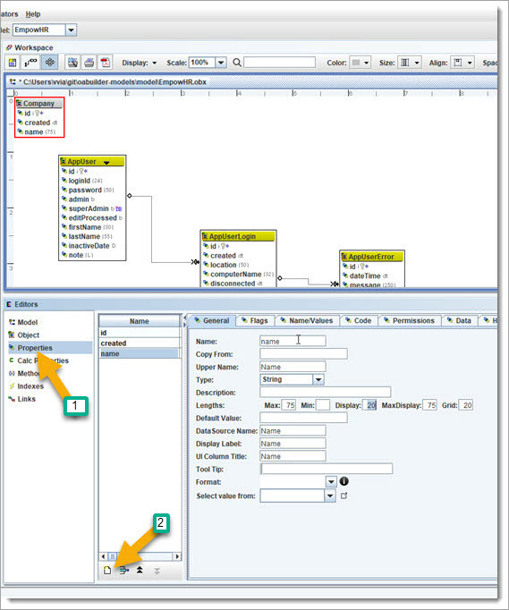
and add abbrevName

Change the UI column title to "Abbrev".
Ok, now we have a Company Object, with properties. Let us update a couple of other things in the "User Interface" tab.
Select name as the "Display Property".

While in the UI tab, go ahead and add the table columns for Company, and the Search properties.
Table columns.

Search properties.

The Company Object is now created with a few properties. We can now add to the Application’s Main UI and test it.
Adding to the Application UI is done by going to the Model Editor and choosing App UI tab.
Add a new node for "Company" by clicking the new button and using mouse to drag into position in the tree. Change the name to "Company".
Click on the "Add ..." button and select Company from the popup.

Note: always save your model changes. By default, all previous versions of the model will be stored in a backup subdirectory under the directory where you are saving your Model.
example: ./backup/202105011310_EmpowHR.obx
 ReGen & Run:
ReGen & Run:
Click on menu item "Generators/Generate All" and regenerate the application, and rerun the Eclipse config for EmpowHr.
This shows the Company search window.
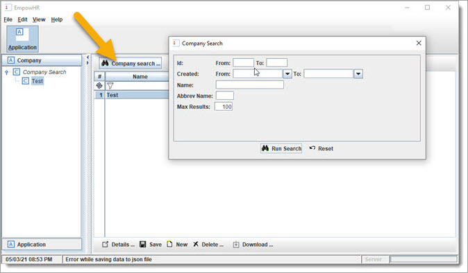
This shows the Company editor.

<![endif]>
 Review: we created the first Object for Company and can create new, search, and edit/update/delete.
Review: we created the first Object for Company and can create new, search, and edit/update/delete.
Take a moment to look at Code. The code generation uses a combination of techniques:
1. template project, filling in using a small tag language. OABuilder defaults to using the OATemplate project.
2. code generation, directly create files (source, resource, config, etc).
3. Base classes that have subclass that can be used to overwrite methods.
4. Report generation that uses html/xml engine to run as templates
The code generation supports adding “callbacks’ the generated model objects, propertys, links, etc.
The project is generated using Model/View/Control structure, and directories that match.
The Controller packages are responsible for managing specific functionality.
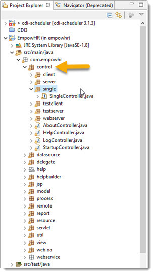
The Model package has the data/entity objects ("./model/oa/*.java"), and the "./model/*Model.java" classes are used to configure the object relationships and rules.

The View packages have the User Interface classes, each named after the Model Objects.

The Resource package has runtime parameters and default values.

For now, that is a good start for reviewing the source code - we will look more later.
Now, create the following three new Objects:
click the new Object button on the workspace toolbar, set the Object name, drag object to match screen shot.
then select all three (mouse drag to rubber band around them), and select a color green for them. 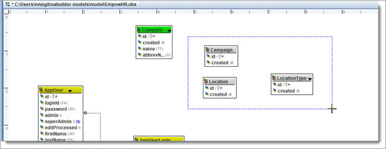
Next, create the relationships between these Objects, starting with LocationType –
 BizRule: "A Company has many of its own Location Types", which is used to describe the names of a company's types of locations. "own" means that the Location Types belong to a single Company, and not shared with other Company ... each Company has its own Location Types. For example: Region, Territory, City, ...
BizRule: "A Company has many of its own Location Types", which is used to describe the names of a company's types of locations. "own" means that the Location Types belong to a single Company, and not shared with other Company ... each Company has its own Location Types. For example: Region, Territory, City, ...

Let us change the relationship to "owned", which means that it is only for the Company that created it, and they are treated as an aggregate (one unit).

We need one more thing for this, to be able to keep the sort order. To do this, we create a property that is a number, so create a new Property, name it "seq", set type as "int"

... and then set the "seq" flag.

This will tell it to use this property to keep the sort order, so that it can make sure to load it in the same order.
Now, let us use the "seq" property for the link ...

The Company.LocationTypes will now be auto sequenced in the order that users position them.
You will notice that the link shows a "S" icon.
Note: "Company.LocationTypes" is a property path, an important concept for object graphs.

Next, add a couple of things to LocationType, and then we will  regenerate and run again.
regenerate and run again.
Add a new "name" property. Notice that for the "Lengths", 25 is max input size. The display size is the default size of textfield, and max display is to allow the textfield to grow to a length (usually the max). The grid length is for the column in a table/grid listing.

Now, let us go to the Object UI, and set the display property to "name" (under "UI General" left sub tab). Under "Table Columns" subtab, add name. For "Search Panel", add "name".
Go ahead and  regen and run again.
regen and run again.
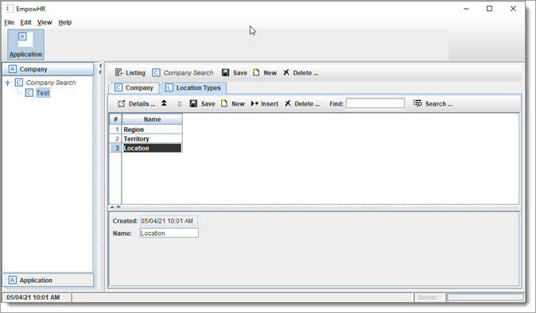
We now have Company.LocationTypes defined. This will be used in the next step, when we set up Company Locations, and how each Location will "know" the Location Type.
First step is to create an owned link between Company and Location - " A Company has many Locations"

We are now going to set up Locations so that it can be multi-level. This is done by creating a link to itself and flagging it as recursive.
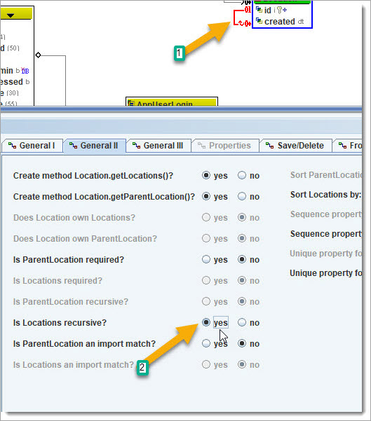
Let us add the following to Location:
create a property "name"

change Location UI to use "name" as display property ("UI General" left subtab), and add name to table ("Table Columns" left subtab) and search ("Search Panel" left subtab).
 ReGen & Run
ReGen & Run

Next, we want to know a Location's LocationType, based on its level in the location hierarchy. There are two options, the first would be to allow the selection from the Location's Company list of LocationTypes (Company.LocationTypes). The second is to have it automatically pick LocationType based on Company.LocationTypes list to match the position of the Location under Company (since Location is recursive/hierarchy). We will choose both, so that a Location.LocationType can be directly selected, else it will default to the Company.LocationTypes with same position.
<![endif]>
To do this, we will first create a Location.LocationType link. Right click the Location object and click new link, or click the link button on the workspace toolbar.
Now we need to make a couple changes to the new Location.LocationType. First make sure the relationship is One LocationType, Many Locations, and that the names are "Locations" and "LocationType".

Next, we need to have choices for LocationType use the LocationTypes from Company.LocationTypes. This is done be going to the "General III" tab and setting the value for "Select LocationType from:" to Company.locationTypes.

Do a codegen and rerun the App
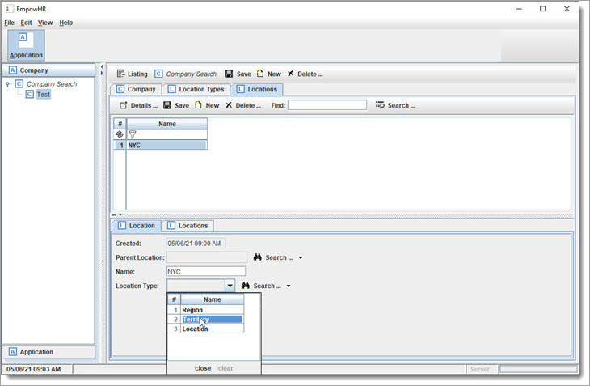
One last thing: click on the link Company.locations, go to the "General II" tab, and set "Is Locations Recursive" to checked.
 ReGen & Run: then add some data.
ReGen & Run: then add some data.
If you click on sidebar "Company Search", and then click the "new" button.
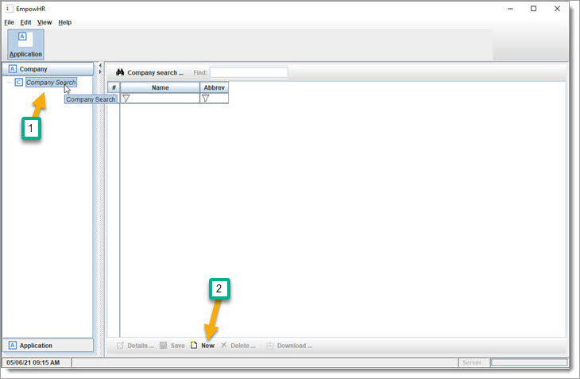
Set the name of this new Company to "TestCorp", abbrev name "TC".
Click on the "Location Types" tab, and use the "New" button to create and match the following list:

Close the Application, and rerun again. Click the toolbar "Application" button, then click the sidebar "Company", notice that no Companies are showing. Click the "Company Search" button, and then click the "Run Search" button to get a list of all the Companies. Your new Company will be on the list, and under the Company side bar.

Note: the data is stored in the "runtime/single/data directory", in multiple formats. They are also saved backup copies with files names that match.
To edit a Company, either click the Company showing in the sidebar "Test Corp", or you can click it in the search listing, and then pop it up by clicking the "Details ..." button in the bottom toolbar.
The first shows it inside the main window, the second will show it in a popup window.
Now, let us add a Location. Go to the following and add a new Location.

Notice that the Location list will be recursive and displayed in a tree table.
Next, we want to allow the Location that has not been assigned a LocationType to default to the specific value in the Company.LocationTypes.
We will do this by creating a "Calculated Link" between Location.LocationType and call it "Location.calcLocationType".
Right click on Location and choose the following:

Let us set up the Link.
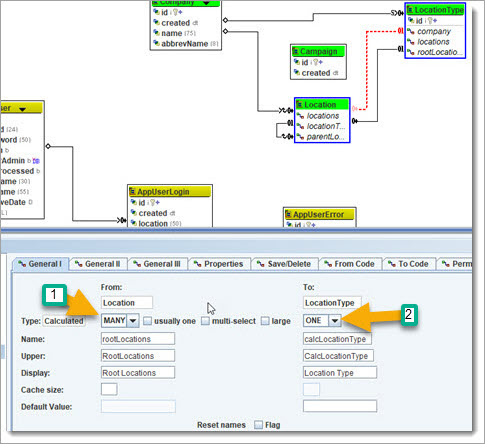
Now, we need to set up the calculation. The first thing is to go to the "Properties" tab, and click "Add ..." to add property paths: "Company.locationTypes", "Company.locations", and "locationType".

These are the property paths that are used to determine the correct Location.locationType, and needs to be recalculated if any of the values change.

Go to the "From Code", and add the code that will be used for the calculation. Click the "Generate Code" to have a template created to enter code.

Enter code, that shows that it first checks to see if a LocationType is assigned, else it will determine based on the Company.LocationTypes. 
 Review: We now have Company.Locations, that can be a hierarchy. The Company has a list of LocationTypes, that can be directly assigned to a Location, or use the correct value from Company.LocationTypes.
Review: We now have Company.Locations, that can be a hierarchy. The Company has a list of LocationTypes, that can be directly assigned to a Location, or use the correct value from Company.LocationTypes.
Let us add the Location.caclLocationType to the Location table columns.

 ReGen & Run
ReGen & Run

The Location.calcLocationType will either be the assigned LocationType, or if empty (null) it will be the same as the Company.LocationTypes(pos), where pos is the position of this Location in the Company.Location hierarchy.
We have been running as "single" user, and now we will run a "server", and multiple "clients" - to show it working as a distributed application.
Run as Server - first, copy the files "ObjectCache.bin" and "data.bin" from "runtime/single/data" to "runtime/server/data".

To run from Eclipse, choose menu "Run/ Run Configurations ..." and click on "EmpowHR", change name to "EmpowHR single". Then click the duplicate button (upper left toolbar) to create a duplicate, and name it "EmpowHR server". Go to the "Arguments" tab, and change single to server in both places.
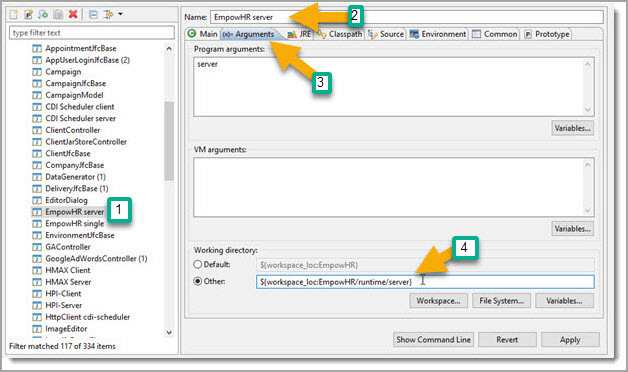
Run this, and you will see the server UI.

Follow the same steps to create an Eclipse runtime for "client", and then run.
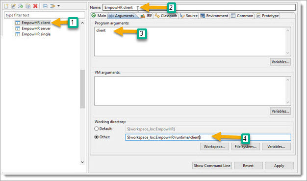
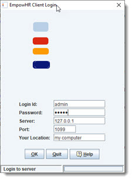
Login using "admin"/"admin" for user/password.
Run two clients, and go to the company location that was created.

Now, change the location type and notice how the other UI is automatically updated.
 Discuss & Learn: The change causes a "reaction", causing the calcLocationType to be redisplayed on both programs. This behavior is described as an "observable & reactive object model", and is an important feature of the OA libraries. This allows any of the model objects to be distributed and synchronized across servers - realtime or eventually.
Discuss & Learn: The change causes a "reaction", causing the calcLocationType to be redisplayed on both programs. This behavior is described as an "observable & reactive object model", and is an important feature of the OA libraries. This allows any of the model objects to be distributed and synchronized across servers - realtime or eventually.
 Discuss & Learn: Back to discussing databases ... the model objects are set up to work with any datasource, all types and combinations. Currently, our demo application is using an in-memory datasource that supports sql/OQL and is persisted to xml, json, java binary. The client apps are using a client datasource, which remotely interacts with the server's datasource. Caching is included, and "hinting" is used when fetching data to make it more efficient when making a trip to another server or disk. For example, getting a Company is smart enough to know about other information that will be needed close to the Company (reference data, other Companies, etc), and sends this with the request as "hints". The hints are based on the object graph and how it is "wired" (used/configured) in the part of the application that is requesting data.
Discuss & Learn: Back to discussing databases ... the model objects are set up to work with any datasource, all types and combinations. Currently, our demo application is using an in-memory datasource that supports sql/OQL and is persisted to xml, json, java binary. The client apps are using a client datasource, which remotely interacts with the server's datasource. Caching is included, and "hinting" is used when fetching data to make it more efficient when making a trip to another server or disk. For example, getting a Company is smart enough to know about other information that will be needed close to the Company (reference data, other Companies, etc), and sends this with the request as "hints". The hints are based on the object graph and how it is "wired" (used/configured) in the part of the application that is requesting data.
For example: a Company is using its LocationTypes to set the Company's Locations.locationTypes.
If the Company X is not in memory (cache), then it will be requested from datasource. If it is running on a client, then the datasource knows the server(s) to get Company from. The computer could be using a database directly. Either way, it "looks" at how the Company will be used and is able to "hint" to "also send the Company.locationTypes, Company.locations, etc." if it has time. Otherwise, there is a good chance it might be calling for it soon, so go ahead and have it ready. This allows it to be dynamic and smart about how and what is being delivered and acts as a JIT (just in time) access for your model objects. The "goal" is to act like the objects are in the local cache.
Another example: selecting all Orders for an Employee, to display them and allow editing. The application code around this looks at how the model objects are "wired"/connected and will see that the OrderItems, and other reference data could be needed (based on user navigation). When the method is called for order.getOrderItems(), it will look at other unloaded reference on "order", and along with the other Orders close to this Order from the collection of Order objects from the query.
While we have the server running, let us use the browser to see some features of the webserver.
The server uses embedded Jetty for a zero admin webserver. It is configured as a high end webserver with built-in services, including Java Server Pages, web services (SOAP), remoting through http, REST API, Swagger/OpenAPI, security, and many more features.
There is full REST API included for the Model. For example, use your browser to go to "http://127.0.0.1:8080/servlet/oarest/companies" to see the list of Companies.
Use admin/admin for access.

We will spend more time on the REST API later, and the other web server features. It is a secure access to your full Model.
The Swagger interface shows all the Model REST API calls, and is included in the generated Application.
This needs to be generated by choosing menu "Generators / Open API" and selecting directory "swagger-ui". This creates the file OpenAPI.json.
After generating, use this link to display in browser: "http://127.0.0.1:8080/swagger-ui/index.html".

 CheckPoints: throughout this demo, there will be checkpoints with a number. This can be used to get a copy of the Model (EmpowHR.obx), and the data files “data.bin” and “ObjectCache.bin”.
CheckPoints: throughout this demo, there will be checkpoints with a number. This can be used to get a copy of the Model (EmpowHR.obx), and the data files “data.bin” and “ObjectCache.bin”.
Go to the EmpowHR project at https://github.com/ViaOA/empowhr, and go to the checkpoints directory.
Do the following if you would like to use them at that point. Substitute # with the check point subdirectory that is needed.
Note: some of the CheckPoints will only have a Model. You can use the previous checkpoint's data files.
 CheckPoint #1 was created, before starting this next section.
CheckPoint #1 was created, before starting this next section.
use the instructions above to use the checkpoint files.
 Continue working on the Model:
Continue working on the Model:
Ok, close the Server and Client Apps, and we will go back to running as single user, and continue building our Model.
The last model change was the calculated Location.LocationType link. We are done with that and can now create the "Company owns many Campaigns" Link.
First, let us add the following Properties to Campaign: name, startDate, endDate.

Make the following change for Campaign:
Go to the “User Interface” tab, “UI General” left tab, and set Display Property: "name"
Then go to the “Edit Panel” side tab, to match the following:
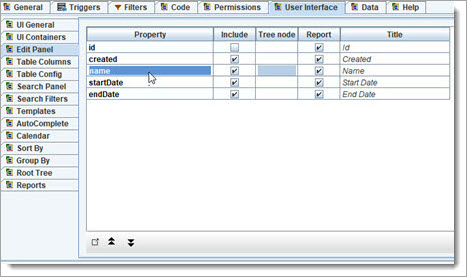
Also, make sure to check the "include" column for "Id".
<![if !supportLineBreakNewLine]>
<![endif]>
For UI table columns, match the following:

And select all properties for searching:

Now create a link from Company to Campaign (1toM) and make it an owned link.

... and go back to Campaign table columns and add Company.
 ReGen & Run: do a codegen and rerun the App as single user.
ReGen & Run: do a codegen and rerun the App as single user.
Perform a Company search, select your "Test Corp" Company, then then create a new Campaign.
Now we will add a validation to campaign.endDate. It can’t be before startDate.
There's a couple of options:
1. have it checked when the setEndDate is called.
2. add validation to a callback (discussed next) that a program can interact with.
Option #1, validate during call to setEndDate.
Select endDate in the property editor. Go to "code" tab, "get/set" subtab, click the "generate code", and then add the custom validation.
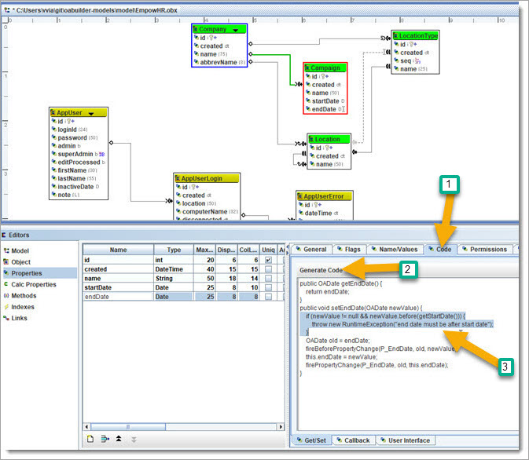
This works and keeps invalid date values, but it would be "nice" to know ahead of time if a new value is valid or not.
Let us set that up using a Callback: Select the callback subtab, check the "VerifyPropertyChange", then click "generate code", then add the custom code.
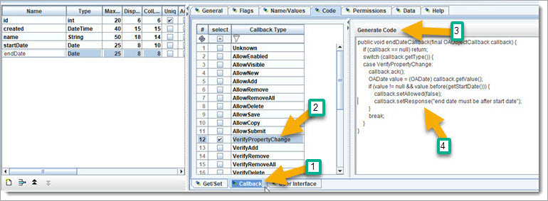
<![if !supportLineBreakNewLine]>
<![endif]>
Do a codegen and rerun the App as single user. Try to change the Campaign.endDate to be before the startDate.

Let us go ahead and use Callback for another user interaction. If the Campaign.startDate is changed, and its previous value is less then today, then we should have the user confirm the change.
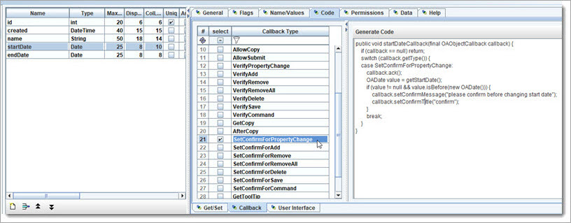
 Discuss & Learn: “Callbacks”. Used to allow outside code to interact with custom code in Model Objects. This is an important ingredient in the code generation techniques used in OA, to be able to build close to 100% of an Application. There are always special cases that fall outside of what can be done in a modeling and code generators, and callbacks are great for solving this.
Discuss & Learn: “Callbacks”. Used to allow outside code to interact with custom code in Model Objects. This is an important ingredient in the code generation techniques used in OA, to be able to build close to 100% of an Application. There are always special cases that fall outside of what can be done in a modeling and code generators, and callbacks are great for solving this.
Set the "sort order" for Company.Campaigns to be by startDate.
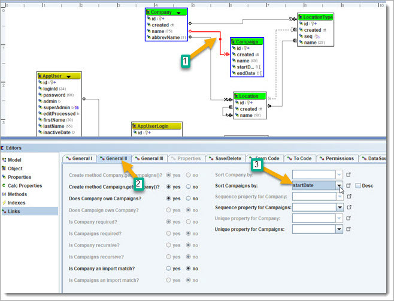
We could have (might do it later) used a seq property for the sort order.
 Discuss & Learn: OABuilder keeps track of the changes. Go to the Model Editor, "Changes" tab.
Discuss & Learn: OABuilder keeps track of the changes. Go to the Model Editor, "Changes" tab.

These are the changes made so far, and are used by code generation to do things like creating a database change script (DDL & SQL).
 Review: We have added Company.Campaigns.
Review: We have added Company.Campaigns.
Next, let us go in fast forward and layout a few groups of the Objects needed: Employees, Awards, and Items. Then we will connect them together and start filling in details.
Here is the story - our customers are Companies, that have Locations, that have Employees. These Employees receive Awards, that can be redeemed for Items. The Items are in a Catalog, that is organized into Sections. Each Award has an AwardType, that is associated with the Catalog that can be used to choose an Item from. Each Item can have options (ex: color, size, etc).
<![if !supportLineBreakNewLine]>
<![endif]>
 CheckPoint: Do not worry about creating these, instead use the saved Model from "checkpoints/2/EmpowHR.obx".
CheckPoint: Do not worry about creating these, instead use the saved Model from "checkpoints/2/EmpowHR.obx".

This is the "mode" that you can be in when talking through the business requirements and building a model for it. The next "block" of changes will be for the shopping cart and creating and managing employee Orders. For now, we will zoom in and get this last block defined and tested.
Let us color code first. Set the main Objects to green, to have them stand out, and have the other Objects unflag so that they are gray.
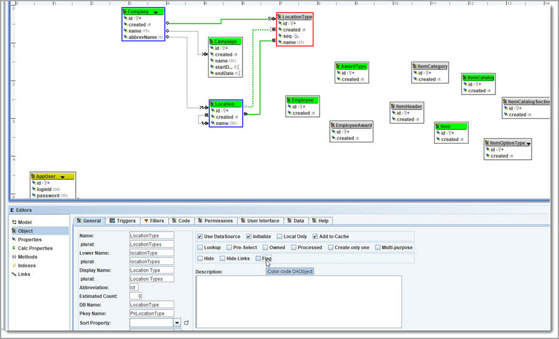
Let us start with Employee and add the following properties.

The password will use a one-way encryption and needs to allow for some "bloat", so the size is set to 70.
Create a link for "Location.employees" (one2many). This is not an owned link, since an Employee can be moved to another Location. We do want to make sure that Employees and the Location must be in the same Company. Otherwise, an Employee could be added to a Location in a different Company. To define this, go to the Link tab "General III" and set the equal property value for Location and Employee to be the common Company.
Location.Company & Employee.Location.Company. This tells the Model that they both must match for it to be valid.
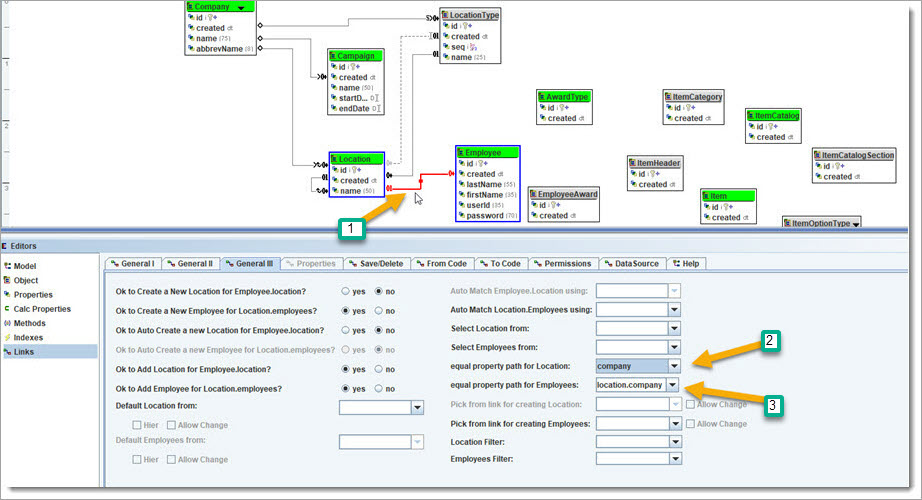
Let us create a Calculated property for Employee "fullName".
Select Employee in workspace, select the Calc Property Editor, and click the new button.

Set up the dependent properties as shown.

Add the following for the code.

Set up Employee UI, change display to "fullName", and set up "Table Columns" for first, last names, and have search match this:
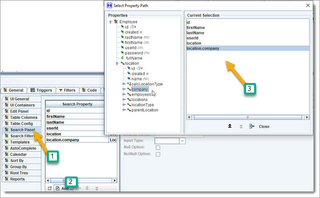
For the search, set userId, location and company to have "null option" checked.
 ReGen & Run: do a codegen and rerun the App as single user.
ReGen & Run: do a codegen and rerun the App as single user.
There is a compiler error with the calculated property Employee.fullName. Change the code to this and regen.
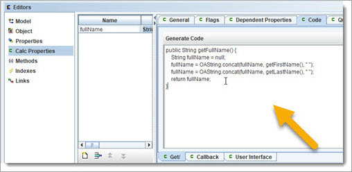
Do a  codegen and rerun the App as single user.
codegen and rerun the App as single user.

Ok, now we have Location.employees, but need to add a few "user friendly" items. First, there is no way to find an Employee without "drilling" down from Company and Locations.
Let us create an Employee Search from Company. Right click the Company Object in the workspace, and choose "Create new Search Link ...", 
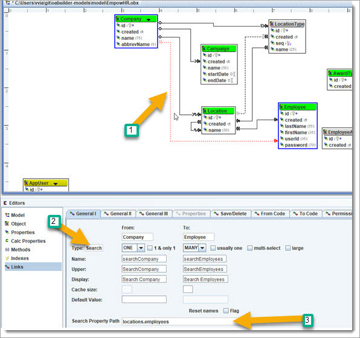
 ReGen & Run: regen, run, and bring up your Company (using Company Search), and then use the "Search Employees" tab to find John Doe.
ReGen & Run: regen, run, and bring up your Company (using Company Search), and then use the "Search Employees" tab to find John Doe.
There are a few things to notice in the UI, and how it directly works as Modelled.
From the search for John Doe, from the Company, you can popup Employee using the "Details ..." button. This shows the Company.Employees relationship.
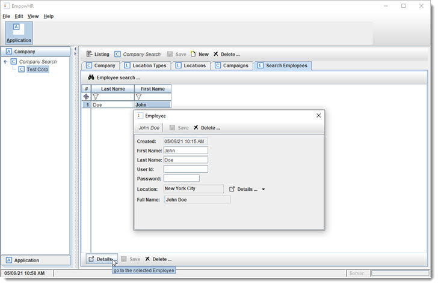
From there you can click on the Location "Details ..." button, and then see John Doe in the "Employees" tab.
The UI navigation follows the Model's Objects & Links. The Application is treating this as an Object Graph, which means the Objects are not just a copy of data from a record in database, but loaded into cache and distributed across systems.
Changing "John Doe" to "John Dox" from the Location's Employee table shows how the "other" John Doe is also changed. This is because the program and Object Graph are smart enough to be using the same instance. Any other part of the Application that has Employee John Doe (id=1) will use the same object and not create a duplicate.

The Company Employee Search is helpful, but an Admin would want to search all Employees. Let us create a full system Employee search, and update the UI with a new title bar button for searching.
We do this from the Model / App UI tab. We are first going to change the UI hierarchy so that it will have another layer/level.
The UI generator looks at the "depth" of the UI tree to determine how to build the navigation layout. The top level is for main toolbar, next level is side bars, and additional levels will allow expanding the side levels.
Click on the new button (bottom left) to create a new node and then drag-n-drop it to under the Application (root node). Name this node "Company" and then drag the other "Company" node under it.
Create another new node, name it "System" and drag/move it to Application. Click on the new node and name it "System" for now. Drag node "Application" and drop on "System" node.

 ReGen & Run: make sure it is still working :)
ReGen & Run: make sure it is still working :)

 CheckPoint #3 was created. See instructions above on where to copy and rename the files.
CheckPoint #3 was created. See instructions above on where to copy and rename the files.
Let us now create our main toolbar Search button. Create a new node, naming it "Search", and place it under Application.
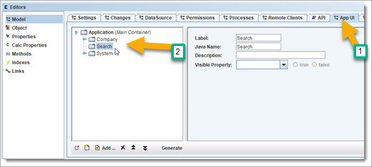
Add a Search node and make it a child under Search.
Now, use the add button to add all the following:
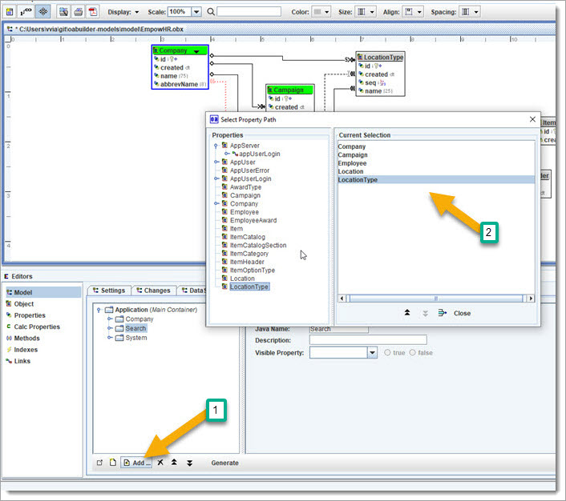
It will look like the following:

We might not want to leave Company as "List All", but it is good for now.
OABuilder lets you define coarse and fine grain access and security. Let’s go back to the Model UI and add a security setting to the "System" button, so that only Admin users can use it.

We will show this being used when we switch back to multiuser mode later.
Set up another company "ABC Company", with one location type, and then add one location.

If you go to the "Search Employees" tab and do a search, there will not be any results. Select the "Test Company" and redo the search to see "John Doe".
Go ahead and create an employee for "ABC Company" main location with name "Mary Smith".
Let us make a few changes to Employees before moving on. Add new properties for hireDate, inactiveDate, inactiveReason.

Make inactiveReason visible only when there is an inactiveDate.

Make the Employee recursive by recreating a self-reference/link, so we can know the management structure. Use the link button to do this, then go to "General II" tab and set "Is Employees recursive?" to yes.

We also need to make sure that Employees belong to the same Company.

Also, make the Link Location.Employees recursive.
Do a codegen and rerun the App, and make sure we can get "John Doe" some help from a new Employee.

Ok, the Location.employees recursive is not going to work for us. Instead, we need to have Company.employees as a recursive/hierarchy, and Locations.employees as the Employees that work from that Location.
So, we will undo a couple of things and move forward from there. The nice thing is therefore modeling is so helpful, making it easy to try things and make changes.
Go back to the Location.employees link and set "Is Employees recursive" to no.
Go back to the Employee.employees link and change the name from "parentEmployee" to "managerEmployee".
Create a One2Many link for Company.Employees. Set "Does Company owns Employees" to true. "Is Employees recursive" should be yes.
Also, go back to "General I" tab and set the "Cache Size:" for Employees to 100. This sets the amount of Company.employees that will use cache, before allowing them to be re-selected from Datasource.
Delete the Link for Company.searchEmployee - and we will next recreate it using "Company.Employees" as the property path. Right click Company, "Create new Search Link ..." and select "Company.employees".
Make the following change to Link Location.employees, "General III" tab, set "Select Location from" to "company.locations".  Review: we just did some rewiring, so that we have "a Company owns a hierarchy of Employees" that "belong to a Location".
Review: we just did some rewiring, so that we have "a Company owns a hierarchy of Employees" that "belong to a Location".
I moved the Objects around a bit, go ahead and use the next CheckPoint #4.

 CheckPoint #4 was created
CheckPoint #4 was created
Use the instructions above to use the checkpoint files.
Here is what Company is looking like now.

Couple of notes: the demo application is being generated straight from the model. The code generators have all the information to do this, including the custom code that we added.
The recursive "Company.employees have employees" has multiple ways for viewing.

Before moving on, let us look at the model.

This shows how the Locations and Employees are set up so that they are under the same Company.
Let us create some Object Filters. We want a list of Employees that do not have a HireDate assigned. Click on the Employee Object, select the "Filter" tab, click "New" button, and make the following Filter.

Go to the "Dependent Properties" and add "HireDate".
Go to the Code tab, and add the following for the Query. This is how it will initially load from datasource.

Now add the Java code.

... also fix a typo, change "HireDate == null" to "hireDate == null".
 Regen and rerun:
Regen and rerun:
Now give "John Doe" a hireDate. Change the Table to "flattened", and choose "No Hire" from filter dropdown.

That's a simple Filter, but it gives you the idea of how it works. A filter be created on anything, and it will be dynamically updated.
Next let us look at how to create a "Test Client", which is a client application that can connect and interact with the Server.
We want to run the Server and have another program connect to it and select Employee John Doe.
From Eclipse, go to "run configurations" and find and make a duplicate of your "EmpowHR client", and make the following changes.

If you run it now, it will try to connect to a server and fail. Let us run the server, but first copy ObjectCache.bin & data.bin from runtime/client/data to runtime/server/data. Then run as Server, then run your testclient.
The testclient connected to the Server and then exited. Now, pull up file TestClientController.java, and make the following change:
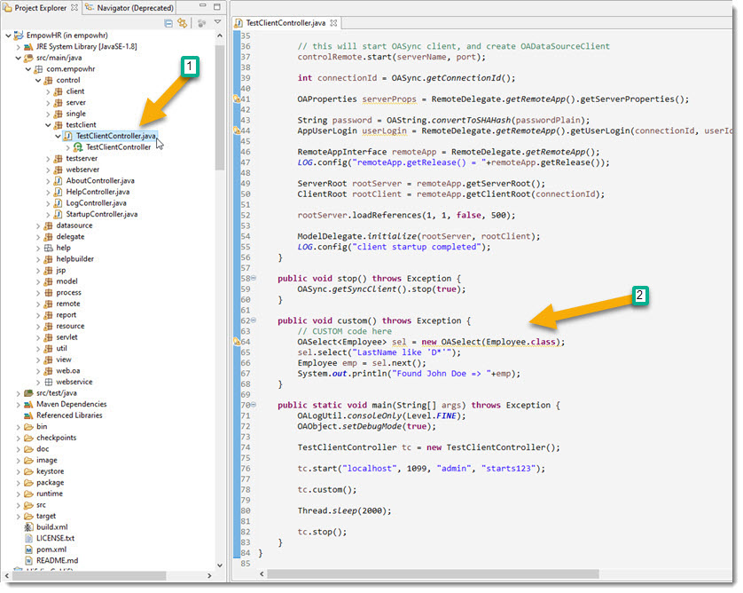
Rerun and you will see console output showing John Doe Employee object, and then it will disconnect after 2 seconds.
Let us now create a "New Hire Certificate" for John Doe. We want to be able to have a template created for the Company or Location and allow it to be used for an Employee.
Click on the Company Object and create a new property.

Click on the flags tab, and check "Html Template".
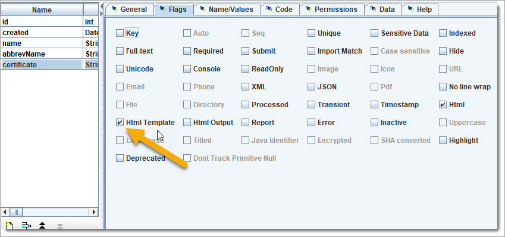
 Regen and rerun as Single User.
Regen and rerun as Single User.
We will go over all the things that you can do with the editor in another tutorial. For now, it is worth noting that you can have a background image, which would make the certificate look great. Other data tags can be used to dynamically create as a report or pdf.
What we want to do next is to allow a Location to have their own employee certificate, instead of the one that is in the Company.
Create the same project "certificate" in Location as you did for Company. Use copy and paste to save time. From the left side, right click on the Company.certificate property and choose copy. Then right click on Location and choose paste.
 Regen and rerun as Single User, and see how the Location now has a Certificate tab.
Regen and rerun as Single User, and see how the Location now has a Certificate tab.
Now we want to be able "know" what certificate to use for an Employee. Both the Company and Location has certificate property, we want to have the Employee.location checked first, and if empty then keep checking the parent Locations since it recursive, before using the Company.certificate.
To handle this, we will create a calculated property in Employee for "certificate" and use a finder to get the value. Click on the Employee Object and create a new Calculated Property named "certificate".
Go to the "Dependent Property" tab and add property paths: "location.certificate", and "company.certificate".
For the "Code" tab, enter the following:

 Regen and rerun as Single User, and see how the Employee Certificate tab matches the first value found in Location or Company.
Regen and rerun as Single User, and see how the Employee Certificate tab matches the first value found in Location or Company.
Note: setting a Location hierarch would also follow the Location hierarchy itself.
Next let us add an Image Object to the Model. We will use it as a general purpose place to store images. Initially, we use it for Employee phone and signatures.
Create a new Model Object and name it "Image". Click the checkbox for "multi-purpose".

Create the following property to store the image.
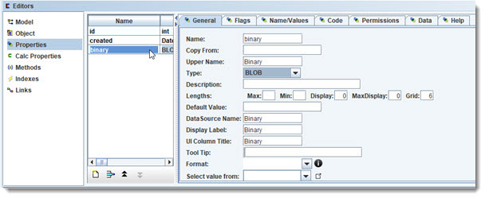
Go to the "Flags" tab and check "Image".
Now create a link between Employee and Image, set type to OneToOne.
 Regen and rerun.
Regen and rerun.
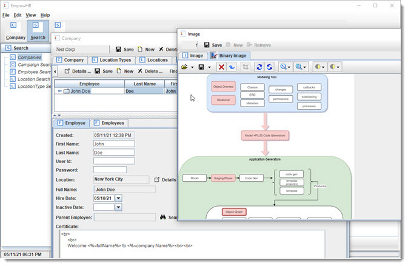
Image editor.
The name of our last Object "Image" caused some problems, since there are other classes with the same name. We can fix that by changing the Object to "AppImage", and everything else will adjust (rename).
We will also need to delete the files that were generated for the "Image" Object, since OABuilder does not delete any files.
From Eclipse, you can do a "Search / File ...", and select Image*.* to get a list.

Then use the following to delete all of them.

Go ahead and use the next  CheckPoint #5. Get the model and the data files.
CheckPoint #5. Get the model and the data files.
 Regen and rerun.
Regen and rerun.
Let us take another sidetrack and look at generating a database script from the Model. The Model is database independent, which means that we can switch databases easily. So far, we have been using the OADataSourceObjectCache, which loads data into cache and allows queries and crud operations. It is great for starting out, entering test data, and for Applications without a ton of data. The next level would be to use JavaDB, which your application is set up to work with zero admin. Backups, compression, and other housekeeping are built-in, and with OA it is able to even act as a distributed database - more precisely, "a distributed Object Graph" that works over top of a datasource. At any time, we can choose to switch to another JDBC database or other DataSource.
Let us add JavaDB for now and get an idea how the model generates the database's scheme.
Go to the Model Editor, and click on the "DataSource" tab. Set up to match:

Now that it knows what type of DB, the Database DDL script can be generated.
Select "Generators" from the menu, and click on "SQL Script ...", and it will ask for file name to write it to. This script can then be used to create the database scheme.
That is the introduction, we will get more into the database/datasource later and show some apps using various databases. Outside of config settings and startup, there is not any Application code directly interacting with the database. The Objects have built in support to work with whatever datasources are being used, so it is pretty much automated.
One last thing on Database Scripts (DDL, SQL). The Model Editor's "Changes" tab keeps track of changes, so that an update script can be generated. These changes can be cleared once you have generated the script so that the database is then up to date with the model.
Let us continue with the Model. For the App requirements: "A Company can Awards to its Employees". We already have AwardType and EmployeeAward to the Model, so now we can link them up.
Create a link between Company and AwardType, to have a one2many Link (the default). Set this link so that "Company owns AwardTypes".

Create a new "name" property for AwardType: click the new button, and then use the copy autocomplete to make a copy of the Campaign.name property.
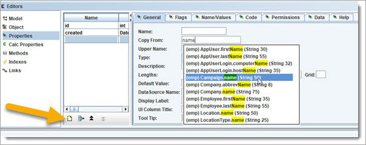
Use the Object Editor to setup the UI for AwardType, setting the table columns and the search properties.
Now, let us create a property for the type of AwardType. Add a new property named "type", as an "int". Go to the "Name/Values" tab and add the following: "Unknown", "Service", "Achievement", "Other".
Go ahead and add this property to your UI table columns and search.
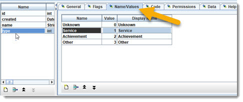
 Regen and rerun.
Regen and rerun.
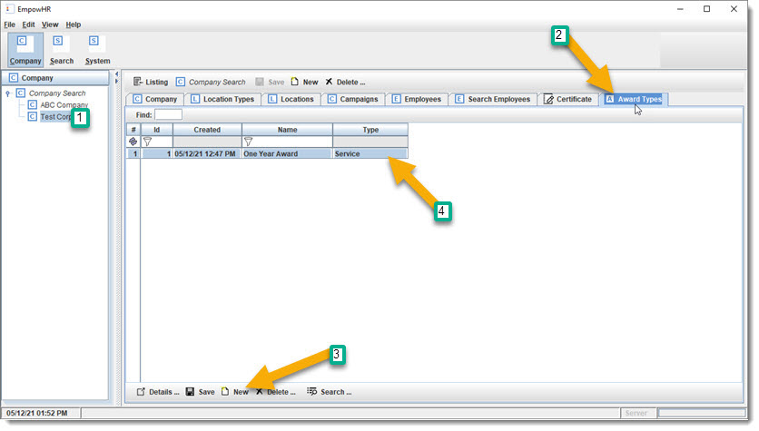
Now, we want to be able to assign an Employee an AwardType. Create a link between Employee and EmployeeAward (1toMany) ... "Employee can have many Awards".
Set "Does Employee own EmployeeAwards" to yes ("General II" tab). Fyi, setting the link to "owned" automatically makes other adjustments to the link.
One last thing, we want the User to select a Company.AwardType to be able to create the EmployeeAward. Go to "General III" tab, and "Pick from link for creating EmployeeAwards", and set to AwardType.
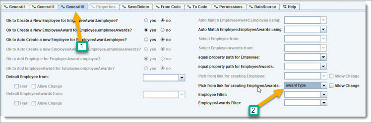
Create a link between AwardType and EmployeeAward (1toMany) ... "an Employee Award has an AwardType from the Company". Also, we dont need AwardType to have a method for getting EmployeeAwards, so go ahead and set it to "no" - go to "General II" tab, and set "Create method AwardType.getEmployeeAwards" to no. Also, set "Is AwardType required" to yes.
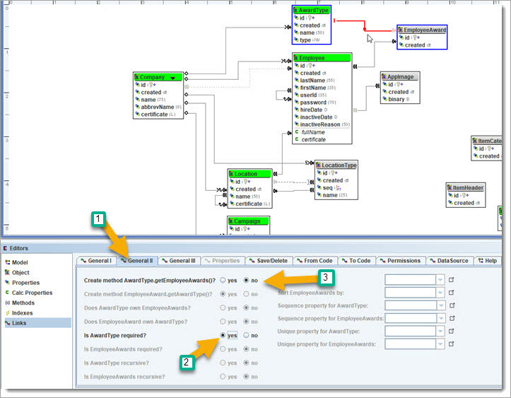
Now, we want the EmployeeAward to be created by picking an AwardType from the Employee's Company list of AwardTypes ... "employee.company.awardTypes", and we want them to only have one of each. To model this, select the EmployeeAward.AwardType link, and set the "Select AwardType from" to match:
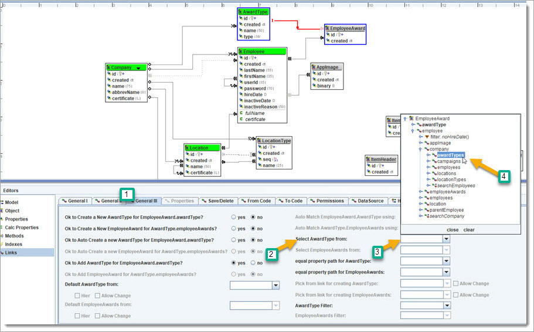
Also, an Employee is only allowed to have one of each AwardType (no duplicates). Do this, by making this change:

This will make the Employee.EmployeeAwards.AwardType unique.
As you can see, the relationships between the objects are also used within other links. These patterns are used throughout modeling, and OABuilder makes it easy to incorporate them to define business rules and logic.

Set up EmployeeAward UI for table columns and search.
I also made changes to the Model UI. I changed the first Company to "List All", and the second to a "Company Search".

Check out the Model "Changes" tab, to see all the changes that we made since we cleared them earlier. If we had an existing DB (JavaDB in this example), then we would need to update it with these changes. The code generator menu has a menu item for "SQL Changes Script ..." that would do it.
 Regen and rerun.
Regen and rerun.
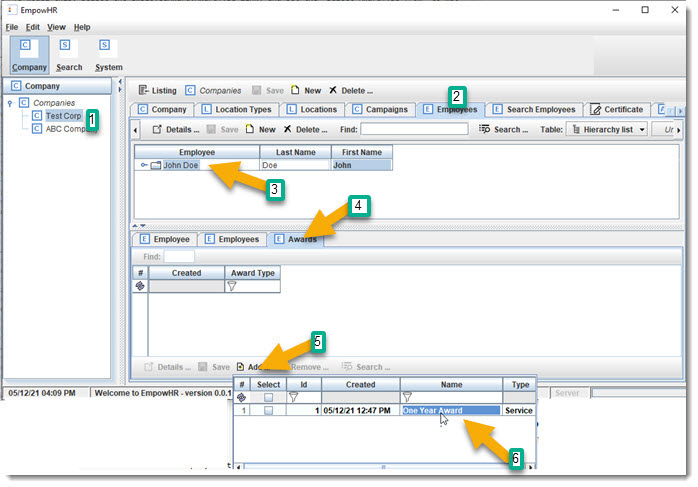
All that work just for this one screen shot :)
This shows adding a new AwardType to an Employee, by selecting from Employee.Company.AwardTypes
If you try to add the same one more than once, it does not allow it.
 Review: We did some fancy links that all work together to automatically define and enforce requirements.
Review: We did some fancy links that all work together to automatically define and enforce requirements.
I created a  CheckPoint #6 here.
CheckPoint #6 here.
Ok, I need to come up with a new requirement that will need us to create a "Link Merger". A Link Merger is used to create a collection from a property path.
For this example, we want to have a "list of open Awards from Employees who are inactive".
To do this, we will create a filter on Employee, add processed date on EmployeeAward to know that it is no longer "open", and create a filter on EmployeeAward for open .
Click on EmployeeAward and add property "processed" with type "date".
Click on Employee, go to the Object Editor "Filter" tab, and create a new filter and name it "inactive".
For "dependent properties", we only need "inactiveDate", and for code:
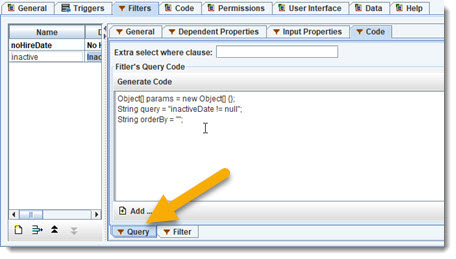

Click on EmployeeAward, go to the Object Editor "Filter" tab, and create a new filter and name it "open".
For "dependent properties", we only need "processed", and for code:


Now, right click on Company and select "Create new Merger Link ...", which will bring up property path chooser. Choose:
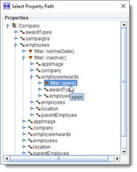
"employees:inactive.employeeAwards:open" which means "for a Company, get the EmployeeAwards that are not processed for Employees with an inactiveDate"
It named the link "mergeEmployeeAwards", go ahead and change it to "mergeOpenEmployeeAwards". And change display to "Open Emp Awards".
 Regen and rerun, and let us see how this worked out.
Regen and rerun, and let us see how this worked out.
Go to the "Test Corp" Company and click on the "Open Emp Awards" tab. The list is empty. Now go to Employee "John Doe" (remember him?), and give him an inactive date, and a reason if you want.
Now go back to "Open Emp Awards" tab.

So ... that is a Merger Link that uses a Property Path from Object to another Object, and allowing Filters. The other thing to notice is that it is real-time: a change that affects the property path will automatically keep the list updated - not by refreshing, but by adjusting with delta changes.
Let us look at the generated code. Pull up Company.java and go to method "getMergeOpenEmployeeAwards()".

The method is a small amount of code, that returns a list (collection) of EmployeeAwards. The annotation tells it the Property Path for the Merger. That is all that is needed to make this work.
Internally, it uses a HubMerger, which will use the Property Path to configure a tree structure that "knows" how to keep the list updated, by listening for specific changes that affect the list. The things that it "listens" for are found by parsing the property path, and getting any additional "dependent property paths" - remember, how we use these in the model? (ex: for calculated properties, filters, etc).
The HubMerger's tree structure is then able to be notified, which allows it to know how to update the list.
The combination of Property Paths (PP), dependent PPs, and being able to listen is core to how reactive models work, and is related to Software Patterns like Model/View/Control (MVC).
Historically, the problem has been scaling. The cost of listening is too high at a certain point. OA has been able to scale this by using a combination of listening with some other unique techniques. The cost is reduced to a small size and stays small with large amounts of data (objects).
Another solution is "reactive streams", but there are boundaries and challenges when using them as the solution.
The solution ends up being a combination of observability through listeners, bubble up events, event streams, tree structures like what Merger uses.
Add remoting to the mix, and you have distributed synchronized object graphs. Sounds complicated, but the code is small and is built on a few core building blocks: Observable Object, Observable Collection, Collection that can be shared, Reflection, annotations, Object Serialization (all types, tech independent), Remoting, Communication (all types, tech independent), Persistence (all types, tech independent). I am sure that I am missing some items, but that is a good chunk of it.
 BizRule: We just got a new requirement: all employees need to pass a series of company tests, and each one could have an AwardType. We can use this as an example to show another way to automate how Links work.
BizRule: We just got a new requirement: all employees need to pass a series of company tests, and each one could have an AwardType. We can use this as an example to show another way to automate how Links work.
Create a new Object "AppTest" and add Name (String, max: 50, display: 15), and add all of the properties for the UI display, search & table columns.
Create another property "document", pick type "String Long", and check as Html in the "Flags" tab.
Now, create a new Link "Company has many AppTests", and make it owned.
Now, set up a new Link "AwardType has many AppTests", and set "create method AppTest.getAwardType" to no.
Now, set this new Link (General III tab) "Select AwardType from" to: "company.awardTypes".

Now we need to add a flag to AppTest to know if all Employees must take it.
Add property "required" and set to "boolean". Use the "Flags" tab to check "dont track Primitive null".
 BizRule: all Employees need to take Company.Tests that are required.
BizRule: all Employees need to take Company.Tests that are required.
Create a new Filter "Required", dependent property "required", and this for the code:


Now, we need to add support for an Employee.appTests that are automatically created if "Employee.company.apptests:required".
To describe it another way: "An Employee needs to take each required Company Test".
Create a new Object "EmployeeAppTest", create Link "Employee owns many EmployeeAppTests".
Now, create new Link "EmployeeAppTest has an AppTest, and is required". Set (General II tab) "Create method AppTest.getEmployeeAppTests" to no.
Go back and click on "Employee.employeAppTest" Link and "General III" tab, and "Pick from link for creating EmployeeAppTests" to "appTest".

Go to "General II" tab, and set "Unique property for EmployeeAppTests" to "appTest".
Ok, that was interesting. We need to do one more thing ... have all Company required Tests be assigned to Employees - let us see how that can be done - use the automatch, which means to automatically create EmployeeAppTests for all Company.appTests that are required.

Click on EmployeeAppTest Object and update the UI tables columns - to use Employee & AppTest

 ReGen & Run and then we will recap before adding more.
ReGen & Run and then we will recap before adding more.
Create a new Company AppTest.
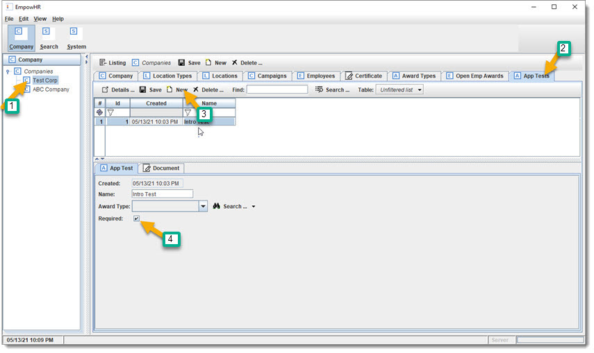
Now go to Employees tab, and all Employees for this Company will have the AppTest added. 
There is still something we need to add - we dont want an inactive Employee getting the Company required AppTest.
We will do this next, but first let us look at the code for Employee.employeeAppTests.

The match info is stored in the Annotation, which is metadata about the Employee used to manage the Employee.EmployeeAppTests. The getHub uses this to be able to get the EmployeeAppTests and keep them updated with the Company.AppTests that are required ... matchHub use property path "Company.appTests:required".
Let us make sure that inactive Employees dont get new AppTests. Click on the link Employee.employeeAppTests, then go to "Permissions" tab, and set the following:

Next, we need to make sure that an EmployeeAppTest that is completed is not removed. First, create a property for EmployeeAppTest.completed and make it a Date.
We'll create a Callback for removing: click on the Link Employee.employeeAppTests,
click on "From Code", and then bottom tab "Employee.employeeAppTestsCallback()".
Then set the code to match:

 ReGen & Run, to see how adding a Company.AppTest is added to Employees when it is required, and removed if it is not required ... unless the Employee completed it.
ReGen & Run, to see how adding a Company.AppTest is added to Employees when it is required, and removed if it is not required ... unless the Employee completed it.
 Review: "A Company can set up Employee Tests that offer an AwardType". "If the Test is required, then all active Employees will get it".
Review: "A Company can set up Employee Tests that offer an AwardType". "If the Test is required, then all active Employees will get it".
We showed how to set up the Links, and how values in Company.AppTest automatically created matches in Employee.employeeAppTests for active Employees. This also used a Callback to fine tune the rules.
Let us make the whole Employee Object disabled if the inactive is set - except for unsetting the inactive.
Go to Object Editor, "Permissions" tab, and set the Enabled Property to "inactive = false".
 ReGen & Run, go to Company "Test Corp", "Employees" tab and give "John Doe" and inactiveDate.
ReGen & Run, go to Company "Test Corp", "Employees" tab and give "John Doe" and inactiveDate.
You will notice that the UI for this Employee is disabled, including the inactive date. This keeps it from being re-activated by removing the inactive date.
To fix this, go to Model property Employee.inactive and create a Callback to allow it to be enabled.


Now, let us set it up so that an Employee will get an AwardType once the EmployeeAppTest is completed.
Here's an option:
Have the code in EmployeeAppTest.setCompleted add to Employee.EmployeeAwards. Here is what it looks like.
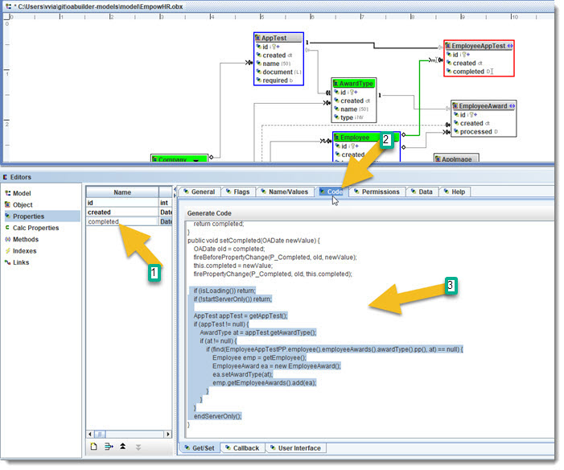
 The method isLoaded is built in and is used to know if an object is being initialized/loaded.
The method isLoaded is built in and is used to know if an object is being initialized/loaded.
The method start & endServerOnly is so that the code will run on the main server. OA supports distributed models, and this is one of a few methods used for objects to interact with how code is ran.
That solution is embedded into the EmployeeAppTest.completed method. Other options that could also be used: 1: create a process that would do it and listen for completed, 2: create a Trigger that would do it.


All three are valid solutions. The last two ideas are "outside" of the Object code, and might be preferred if you want to keep custom code outside of the Objects.
I think we are done with that :)
I created a  CheckPoint #6 here.
CheckPoint #6 here.
Let's set up Campaigns.
 BizRule: "Companies have their own Campaigns, that their Employees are assigned to by one of the following: all active Employees, assigned by Managers, enrolled by Employee, or nominated by X number of other Employees."
BizRule: "Companies have their own Campaigns, that their Employees are assigned to by one of the following: all active Employees, assigned by Managers, enrolled by Employee, or nominated by X number of other Employees."
The first thing we will do is create an "assignment type", for the type of method used for adding Employees to a Campaign.
Click on Campaign and add the following new property "assignmentType", as type = "int",
under "Flags" tab, check "dont track primitive null",
and then match this for the "Name/Values" tab.

Add another property "nominateCount", for the number of nominations needed if type is Nominated.
Since this property is only needed for "type=nominated", then we only want it to be visible in that case.
Create a Calculated Property, "usesNominateCount", type=boolean, "Dependent Properties" needs to have "assignmentType", and "Code" should match this:
Now, go back to "nominateCount" property, "Permissions" tab, and set "Visible Property" to "usesNominateCount".
Go to the UI, table columns and match:

 ReGen & Run and test Company Campaigns.
ReGen & Run and test Company Campaigns.
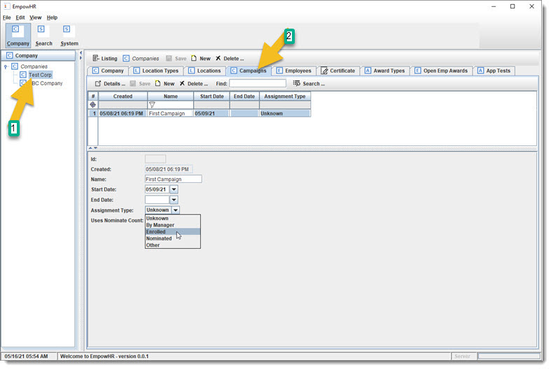
 Review: we now have a way for Companies to have Campaigns, which will allow Employees to be added based on the Campaign.type.
Review: we now have a way for Companies to have Campaigns, which will allow Employees to be added based on the Campaign.type.
Employees will be able to earn awards/points based on their Campaign involvement, which will then allow them to go "shopping".
Next, we will be set up how Employees are assigned Campaigns.
 Discuss & Learn: First, let us take a break and discuss security and how it helps to build the Model, and how it works in the application.
Discuss & Learn: First, let us take a break and discuss security and how it helps to build the Model, and how it works in the application.
OABuilder lets you define a User object for the Model. This is the User that logs into the Application. This User could also be considered a "Context", which could be a person, another computer system, process, etc. Anyway, it is treated as a User, and the application has methods to get and set the User, that is accessible by the Model and all the Application. Basically, getting the UserConext returns who the current User is. In the Model, we can use this User to define permissions for levels of access to the Model itself.
In this demo, we have been logging in as a User, and are able to navigate to most of the application data ... Companies, Campaigns, Employees, etc.
The way we have it, the User is more like an Administrator for the system, an internal operations, customer support, etc., and the rules are based on what these types of users are able to do.
We also want our customers (Companies) to allow their Employees to login, and for them to stay within their area, which would be under the Company that they work for, under their manager, and the rules set up based on that. So, we have two "user" sides to the Application. The first is the "our" company running the software, and the other is our customers Employees.
So far, we have been building the demo and using the internal User, and have been using a desktop application for the user interface.
We want to have other types of interfaces.
To accomplish this, we have the Employee Object to allow our customers to have access, and will later be setting it up to drive a UI for this.
 BizRule: allow Company Employees to login to a web or mobile App that allows them to manager their account and have limited access to the employees that they manage. Also, we will want some Employees to have access to their Company or Location as an administrator.
BizRule: allow Company Employees to login to a web or mobile App that allows them to manager their account and have limited access to the employees that they manage. Also, we will want some Employees to have access to their Company or Location as an administrator.
 Continue working on the Model: Let us add Employees to a Campaign, and later we will use the Campaign. AssignmentType and User (Context) to determine the rules for how this works.
Continue working on the Model: Let us add Employees to a Campaign, and later we will use the Campaign. AssignmentType and User (Context) to determine the rules for how this works.
 BizRule: "Company can have all or a subset of their Employees assigned to Campaigns".
BizRule: "Company can have all or a subset of their Employees assigned to Campaigns".
Create a one2many link Campaign and Employee, and name its campaign.employees.

We need to only allow Employees that are under the same Company as Campaign. 
 Discuss & Learn: the Link that we just created is "Campaign employees" & the reverse "employees.campaign" was set up to be a One2Many. An Employee can be added to the Campaign list of Employees by directly adding to the Campaign.employees or indirectly by setting the Employee.campaign to a Campaign.
Discuss & Learn: the Link that we just created is "Campaign employees" & the reverse "employees.campaign" was set up to be a One2Many. An Employee can be added to the Campaign list of Employees by directly adding to the Campaign.employees or indirectly by setting the Employee.campaign to a Campaign.
 ReGen & Run and test Company.Campaigns has Employees ... and then we will talk about what is wrong and how to fix it.
ReGen & Run and test Company.Campaigns has Employees ... and then we will talk about what is wrong and how to fix it.

 Review: we just created a link for Company.campaigns have Company.Employees. There's a couple of problems.
Review: we just created a link for Company.campaigns have Company.Employees. There's a couple of problems.
1: the "select Employees from" will use a dropdown to show all the Company Employees to select from. This could be a huge list. We want it to use an Employee search instead.
2: the link needs to be of type Many2Many, since an Employee can be in one or more campaigns.
Let us go ahead and change. For #1, clear the value in the link's "select Employees from"
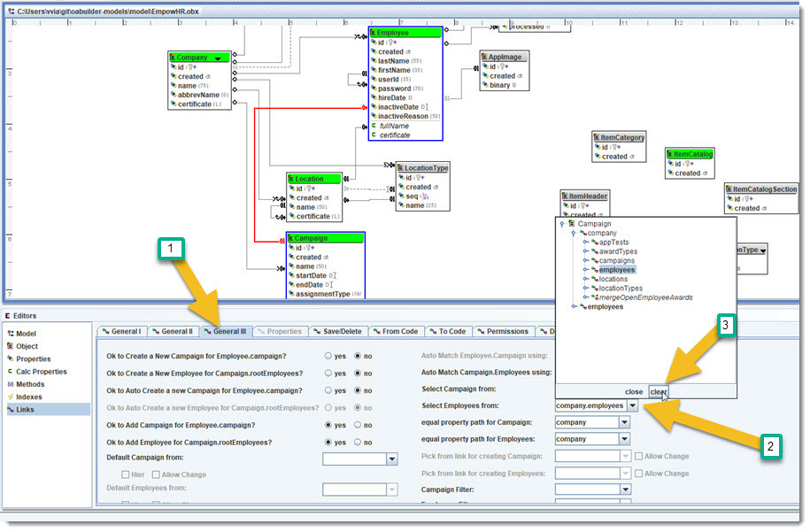
Now change the One2Many link Campaign.Employees to Many2Many link Campaigns.Employees
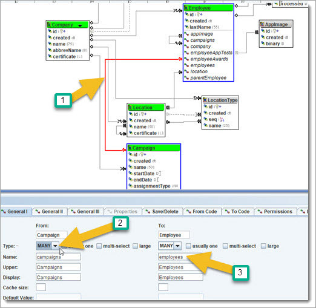
Also, make sure that "select from" and "equal property path" matches the following:

 ReGen & Run to test that Company.Campaigns have Employees ... and Employees have Campaigns. Notice that adding an Employee to Campaign is now using an Employee search, and the Employee & Campaign must match the same Company. Adding an Employee to a Campaign automatically adds the Campaign to the Employee's list of Campaigns - and vice versa. The same with removing.
ReGen & Run to test that Company.Campaigns have Employees ... and Employees have Campaigns. Notice that adding an Employee to Campaign is now using an Employee search, and the Employee & Campaign must match the same Company. Adding an Employee to a Campaign automatically adds the Campaign to the Employee's list of Campaigns - and vice versa. The same with removing.

Lots of arrows here - select Test Company, click on Campaign tab, select first Campaign, select Employees tab, click add button to add Employees, from popup search click run search, multi select one or more Employees, and click Ok button.
 Discuss & Learn: a Many2Many links have a "special" requirement for storing to a database. Both Employee and Campaign have their own tables, and another table is needed to store the relationship between the two. If the relationship is One, then the table uses a column that is a foreign key into the other table's primary key. A link table is used to for M2M relationships and stores the primary keys of both tables.
Discuss & Learn: a Many2Many links have a "special" requirement for storing to a database. Both Employee and Campaign have their own tables, and another table is needed to store the relationship between the two. If the relationship is One, then the table uses a column that is a foreign key into the other table's primary key. A link table is used to for M2M relationships and stores the primary keys of both tables.
Look at the "DataSource" tab, which displays the Link table information for creating the Database script. 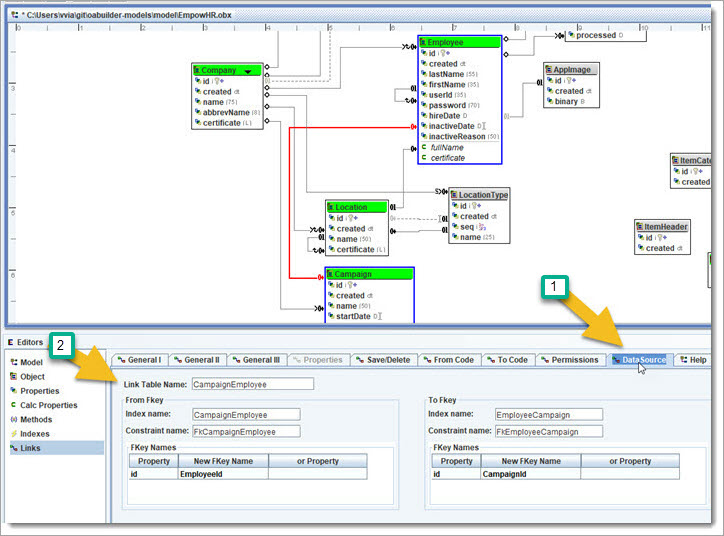
Check out the Model Changes tab, to see how it captured the change to create the Link table.
 CheckPoint #8 was created before starting this next section.
CheckPoint #8 was created before starting this next section.
 Continue working on the Model:
Continue working on the Model:
Sometimes, a M2M relationship needs additional information. For our Employee Campaign Link, we want to know if the Employee participated/completed the Campaign.
To do this, we will remove the M2M link we just created, and instead create a "Link Object", which is just a normal Object like the others, and it will look like the following.
Add new Object, and new Property "completed" (Date).
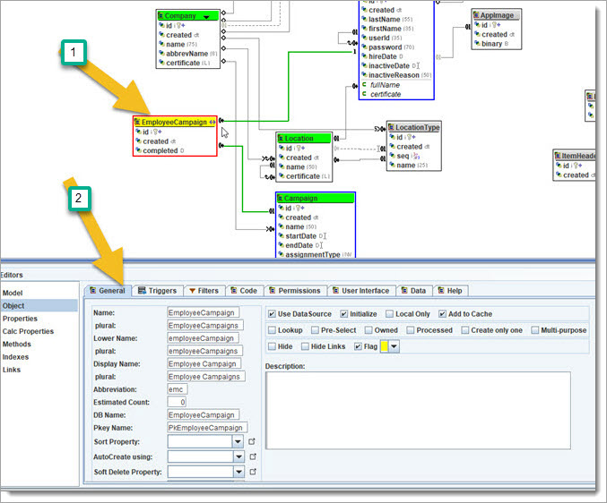
The Links are a little more complicated, since we are having it "act" like a M2M relationship, and using a middle object with O2M link between it and the other Objects, which forms an extended M2M link.
What we are saying here is that "Employees have many Campaigns and for each we have a completed date".
And the reverse "Campaigns have many Employees and for each we have a completed date".
And: the Employees and Campaigns must be from the same Company.
The Object EmployeeCampaign links "Employee.Campaigns" and the reverse "Campaign.Employees", to form an extended M2M relationship.
We have also set it up so that Campaign.Company and Employee.Company must match:
"Employees can only be assigned to Campaigns from their Company", and
"Campaigns can only add Employees from their Company".
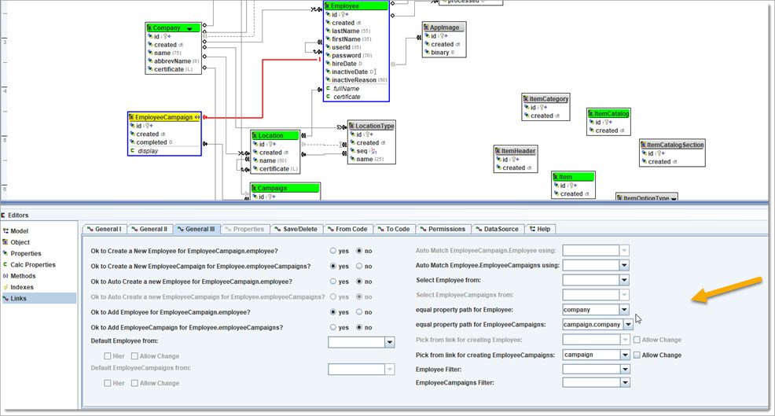
Note: this shows Employee and Campaign must come from same Company. And, that the user should pick a Campaign to create a new EmployeeCampaign.

Notes: this also shows Employee and Campaign must come from same Company. And, that the user should pick an Employee to create a new EmployeeCampaign.
"Select Campaigns from" is used so that an Employee can use a dropdown list of their Company's Campaigns to choose from.
 Discuss & Learn: A Link Object is used to form an Extended ManyToMany relationship between two Objects and requires each relationship object. In our example, "Employees have many Campaigns" is a M2M by using the EmployeeCampaign Object.
Discuss & Learn: A Link Object is used to form an Extended ManyToMany relationship between two Objects and requires each relationship object. In our example, "Employees have many Campaigns" is a M2M by using the EmployeeCampaign Object.
Couple more things before we run:
set up the UI for the EmployeeCampaign to include the Employee & the Campaign in the table columns.

create a EmployeeCampaign calculated property "display", that uses (dependent properties) Employee.fullName and Campaign.name, and then use it as the UI display.
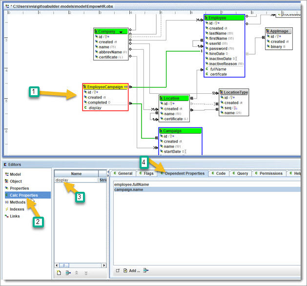
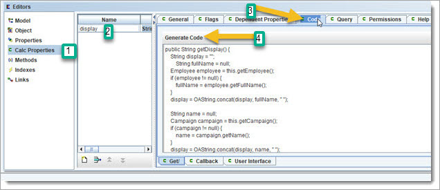
 ReGen & Run:
ReGen & Run:
Test to see how an Employee can be added to a Campaign and how a Campaign can be added to an Employee.
 Review:
Review:
We have just used an Extended Link to form a M2M relationship with an Object in the middle.

Next, we will set up the AwardType that an Employee will receive when they complete a Campaign.
Create a new link "a Company Campaign can have a Company AwardType assigned to it", Campaign.AwardType so that it has the following:
draw a link from AwardType to Campaign ... so that it creates a O2M link.

Go to the "General" tab, and set the "Create method AwardType.getCampaigns" to "no".
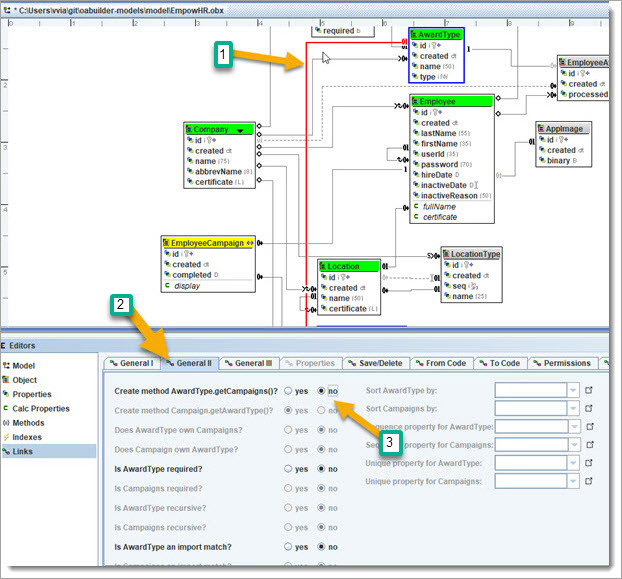
This is "saying" that we dont need a getCampaigns from AwardType. If left to "yes" (which is ok), then the user would be able to see the Campaigns that and assign Campaigns to an AwardType. By setting to "no" were saying that we want to assign an AwardType from the Campaign.
Now, go to the "General III" tab and set the property path for picking an AwardType.
This is saying "a Company Campaign can be assigned a Company AwardType".
Before we rerun, let us go to AwardType and add a new "type", "Campaign":

 ReGen & Run:
ReGen & Run:
Go to a Company Award Types, and create a new one.

Go to Company Campaigns tab, select the Campaign, and assign an AwardType to it.

One more thing, for completeness:
we want to add a new filter, so only AwardTypes with type=Campaign can be selected.
Select AwardType Object, and select the "Filters" tab.
Create new filter "campaignType".
For "Dependent Properties" choose "type".
Select "code" tab, then "query" subtab, click "generate code", and update code to match:
Select "code" tab, then "Filter" subtab, click "generate code", and update code to match:

Now, let us use that new Filter. Click on the Campaign.AwardType link, and make the following change:

 ReGen & Run:
ReGen & Run:
Set a the AwardType for a Campaign, and notice the new Filter working.

 Review:
Review:
We have a new link Object "EmployeeCampaign", that is connected with Employee and Campaign, that is forming a M2M relationship between Employees and Campaigns. This "relationship pattern" is an extended M2M.
I created  CheckPoint #9 here.
CheckPoint #9 here.
qqqqqqqqqqqqqqqqqq
qqqqqqqqqqqqqqqqqq
qqqqqq NEXT qqqqqq
qqqqqqqqqqqqqqqqqq
Event start/end date used by calendar.
discuss distributed ... run as server and clients show rest get sib data remoting diagram tunnelling http rest multiplexer socket remoting smart dynamic references, object graph messaging or remoting.
start layered diagram showing whiteboard qqqqqqqqqqq How do emp get awards ... create an CompanyEvent that has employees, that will auto give Emps an AwardType equal to CompanyEvent.awardType. The next Rule is that only a manager can assign an Employee and AwardType. Rule review codebase maven OA dependencies location.employees .... make employees recursive Location employees ... merge save model (break points) permissions for setting up Locations, etc. have user check readme.txt file use calc Location Type for display qqqqqqqqqqqqq VVVVVVVVVVVVVVV  Whiteboard:
Whiteboard:  Review:
Review:  BizRule:
BizRule:  CheckPoint:
CheckPoint:  ReGen & Run:
ReGen & Run:  Discuss & Learn:
Discuss & Learn:  Continue working on the Model: src="images/demo/todo.jpg"> to do item: h3
Continue working on the Model: src="images/demo/todo.jpg"> to do item: h3